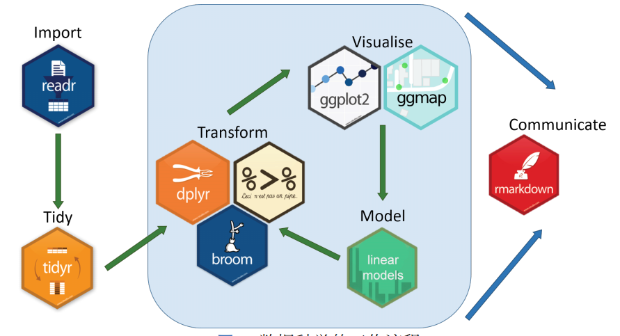

R基础及提高-读书笔记
优雅的 Bookdown 书籍模版
2022-04-22
已有 Block
引理 0.1 For any two random variables \(X_1\), \(X_2\), they both have the same probability distribution if and only if \[\varphi _{X_1}(t)=\varphi _{X_2}(t)\]
定理 0.1 If \(X_1\), …, \(X_n\) are independent random variables, and \(a_1\), …, \(a_n\) are some constants, then the characteristic function of the linear combination \(S_n=\sum_{i=1}^na_iX_i\) is \[\varphi _{S_{n}}(t)=\prod_{i=1}^n\varphi _{X_i}(a_{i}t)=\varphi _{X_{1}}(a_{1}t)\cdots \varphi _{X_{n}}(a_{n}t)\]
命题 0.1 The distribution of the sum of independent Poisson random variables \(X_i \sim \mathrm{Pois}(\lambda_i),\: i=1,2,\cdots,n\) is \(\mathrm{Pois}(\sum_{i=1}^n\lambda_i)\).
0.1 数学公式
数学公式加粗可能是最常见的需求之一， elegantbook 宏包提供的文类 elegantbook.cls 已经调用了 bm 宏包 1。有了 bm 宏包，就可以使用 bm 宏包提供的 \bm{} 命令，而不需要调 \boldsymbol{} 加粗希腊字母，如将 \(\alpha\) （正常）加粗为 \(\bm{\alpha}\)（粗体）。为了在 HTML 网页中显示加粗效果，则还不够，默认情况下， MathJax 是不认识 \bm{} 命令的，所以需要在 header.html 自定义 \bm{} 命令：
<script type="text/x-mathjax-config">
MathJax.Hub.Config({
TeX: {
Macros: {
bm: ["{\\boldsymbol #1}",1],
}
}
});
</script>进一步地，使用常用的 3 个取消符号 \(\bcancel{///}\) 需要在 header.html 添加 JS 库 cancel.js，
<script type="text/x-mathjax-config">
MathJax.Hub.Config({
TeX: {
Macros: {
bm: ["{\\boldsymbol #1}",1],
},
extensions: ["cancel.js"]
}
});
</script>并在 preamble.tex 文件中添加一行代码加载 cancel 宏包
\usepackage[makeroom]{cancel}0.2 自定义 block
基于 Pandoc 自定义 block 是一件很有意思的事情，目前不想让模版过于复杂，仅给出几个最常用的例子。如何自定义可以去看谢益辉的新书 https://bookdown.org/yihui/rmarkdown-cookbook/custom-blocks.html。
要做的还有很多
这是警告
这是提示
这是注意
普通说明
简单实例
如何完成从“看懂别人代码”到“自己写代码”的鸿沟？答案是分解问题。
- 将难以入手打大问题分解为可以逐步解决的小问题。
- 用计算机的思维去思考解决每个小问题的步骤。
- 借助类比的简单实例和代码片段，梳理详细算法步骤。
- 将详细算法步骤用逐片段的编程语法翻译成代码并调试通过。
- 写代码时，随时跟踪关注每一步执行的情况，关注执行的结果（变量、数据值）是否达到预期，这一点非常重要。
以上步骤的关键，就是从问题到代码的中间是有包括分解、编译、调试的过程的。任何编程问题都不可能从问题直接到代码，问题直接到代码是一个可怕的思维定式，在自己编写代码时，一定要强迫自己执行
1中所示的步骤。
我们通过一个简单的例子来说明如何执行以上步骤。
0.2.1 例0.1 计算并绘制ROC曲线
ROC曲线是二分类机器学习模型的性能评价指标，已知测试集或验证集每个样本的真实类别及其模型预测概率值，就可以计算并绘制ROC曲线。
ROC曲线是不同分类阈值上对比真正率（TPR）与假正率（FPR）的曲线，可以通过下图的步骤进行计算。
library(knitr)
knitr::include_graphics("images/eg0-1.jpg", dpi = FALSE)
通过以上定义，我们梳理执行第一步：对问题进行梳理。本例的问题可以分解为如小问题：
- 让分类阈值以某步长在[0,1]上变化取值；
- 对某一个阈值：
- 计算预测类别
- 计算混淆矩阵
- 计算真正率和假正率
- 循环迭代，计算所有阈值的真正率和假正率；
- 绘制ROC曲线。
根据以上步骤，我们生成一个小数据集进行演示。
library(tidyverse)## -- Attaching packages ---------------------------- tidyverse 1.3.1 --## v ggplot2 3.3.5 v purrr 0.3.4
## v tibble 3.1.6 v dplyr 1.0.8
## v tidyr 1.2.0 v stringr 1.4.0
## v readr 2.1.2 v forcats 0.5.1## -- Conflicts ------------------------------- tidyverse_conflicts() --
## x dplyr::filter() masks stats::filter()
## x dplyr::lag() masks stats::lag()df <- tibble(
ID = 1:10,
真实类别 = c("Pos","Pos","Pos","Neg","Pos","Neg","Neg","Neg","Pos","Neg"),
预测概率 = c(0.95,0.86,0.69,0.65,0.59,0.52,0.39,0.28,0.15,0.06)
)
df## # A tibble: 10 x 3
## ID 真实类别 预测概率
## <int> <chr> <dbl>
## 1 1 Pos 0.95
## 2 2 Pos 0.86
## 3 3 Pos 0.69
## 4 4 Neg 0.65
## 5 5 Pos 0.59
## 6 6 Neg 0.52
## 7 7 Neg 0.39
## 8 8 Neg 0.28
## 9 9 Pos 0.15
## 10 10 Neg 0.06- 先解决某一个阈值的问题，以0.85为例
# 在使用tidyverse时，注意要将“真实类别”转化为因子型数据
c <- 0.85
df1 <- df %>%
mutate(
预测类别 = ifelse(预测概率 >= c, "Pos", "Neg"),
预测类别 = factor(预测类别, levels = c("Pos", "Neg")),
真实类别 = factor(真实类别, levels = c("Pos", "Neg"))
)
df1## # A tibble: 10 x 4
## ID 真实类别 预测概率 预测类别
## <int> <fct> <dbl> <fct>
## 1 1 Pos 0.95 Pos
## 2 2 Pos 0.86 Pos
## 3 3 Pos 0.69 Neg
## 4 4 Neg 0.65 Neg
## 5 5 Pos 0.59 Neg
## 6 6 Neg 0.52 Neg
## 7 7 Neg 0.39 Neg
## 8 8 Neg 0.28 Neg
## 9 9 Pos 0.15 Neg
## 10 10 Neg 0.06 Neg- 针对c=0.85的情况计算混淆矩阵
# 即统计本来统计为“Pos”预测为“Pos”的有多少，等等
cm <- table(df1$预测类别, df1$真实类别)
cm ##
## Pos Neg
## Pos 2 0
## Neg 3 5- 计算真正率和假正率。这里我们采用R语言的特长，向量化编程来计算实现。
cm["Pos", ]/colSums(cm)## Pos Neg
## 0.4 0.0到此，我们完成了本例的核心部分，下一步就是要通过迭代，套用以上算法，计算每个阈值的真正率和假正率。同样采用R语言的特性，泛函式编程进行迭代。
# 将上述计算封装为一个函数
cal_ROC <- function(df, c){
df = df %>%
mutate(
预测类别 = ifelse(预测概率 >= c, "Pos", "Neg"),
预测类别 = factor(预测类别, levels = c("Pos", "Neg")),
真实类别 = factor(真实类别, levels = c("Pos", "Neg")))
cm = table(df$预测类别, df$真实类别)
t = cm["Pos",] / colSums(cm)
list(TPR = t[[1]], FPR = t[[2]])
}
# 测试自定义函数计算结果-结果没问题
cal_ROC(df, 0.85)## $TPR
## [1] 0.4
##
## $FPR
## [1] 0- 将自定义函数应用到每一个阈值，并一步到位的将结果合并，完成绘图所需的数据计算。
c <- seq(1, 0, -0.02)
rocs <- map_dfr(c, cal_ROC, df = df)
head(rocs)## # A tibble: 6 x 2
## TPR FPR
## <dbl> <dbl>
## 1 0 0
## 2 0 0
## 3 0 0
## 4 0.2 0
## 5 0.2 0
## 6 0.2 0- 使用ggplot2包绘图。
ggplot(rocs, aes(FPR, TPR)) +
geom_line(size = 2, color = "steelblue") +
geom_point(shape = "diamond", size = 4, color = "red") +
theme_bw()
根据以上的步骤，我们可以知道在R中使用tidyverse进行数据科学的工作流程如下图。
library(knitr)
knitr::include_graphics("images/flow.jpg", dpi = FALSE)